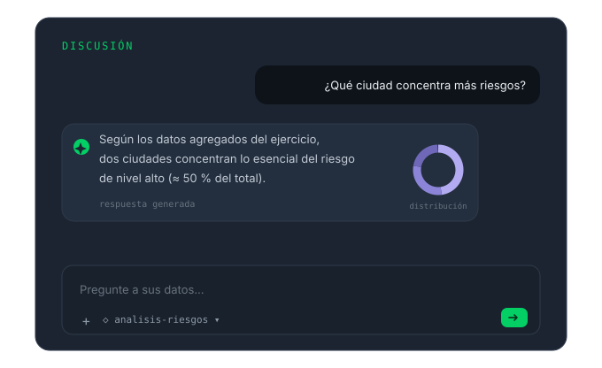
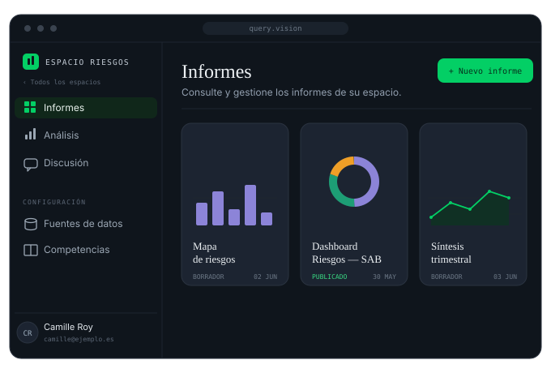

Spot Vision hace hablar su documentación de referencia: sus equipos navegan en lenguaje natural por los corpus que usted le confía — procedimientos internos, históricos contractuales, archivos financieros, plan estratégico — y obtienen respuestas fieles al contenido, dentro de su perímetro.
Lo que el agente sabe hacer
Cientos de páginas de procedimientos, contratos o archivos se convierten en una conversación: cada uno plantea su pregunta y obtiene la respuesta exacta, fiel al texto de referencia — se acabaron las búsquedas por palabras clave y las versiones que circulan.

Los corpus documentales están vinculados a workspaces, y los derechos de acceso siguen su organización. Spot Vision responde sobre el fondo, a partir del perímetro confiado — nunca promete lo que no tiene.

Lo que sus equipos le confían
Modos operativos, políticas, circuitos de validación — la regla aplicable, sin buscar en qué documento se encuentra.
Contratos marco, adendas, cláusulas — el contenido contractual responde directamente, con el artículo como respaldo.
Informes anuales, notas de cierre, reglas de gestión pasadas — la memoria financiera de la organización sigue siendo consultable.
Pilares, objetivos, fichas de acción — cada mánager consulta la misma versión de referencia. En un grupo de protección social: 3.800 empleados alineados.
Cómo trabaja
Usted designa los corpus de referencia — procedimientos, contratos, archivos, plan estratégico. Se preparan y validan a través de la Secure Intake Gateway.
Cada referencial se vincula a un workspace, con derechos de acceso por equipo y por usuario.
Sus equipos plantean sus preguntas en lenguaje natural y obtienen respuestas fieles al contenido, con las fuentes citadas.
Spot Vision se apoya en componentes tecnológicos probados y en el estado del arte: últimos protocolos de securización de las comunicaciones, cifrado de la base de datos, compartimentación de la información.
Siguiente paso
Una demostración con uno de sus corpus documentales, con su vocabulario. Sin compromiso.